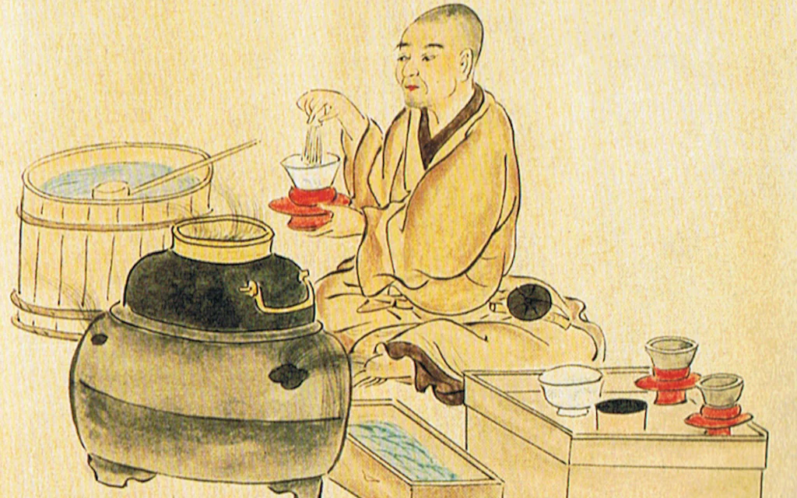
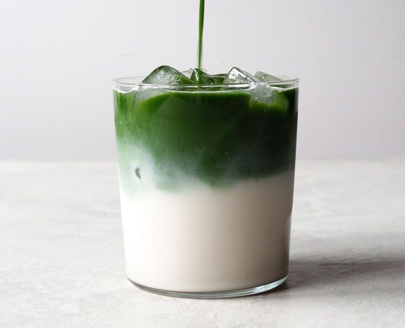

Originated:
Matcha is originated all the way back from Tang Dynasty in China that's passed over 7th - 10th centuries. Matcha was familiarized and introduced to Japan in 1100's by a Japanese Eisai Buddhist Monk who returned from studying in China which he brings along seeds with him, it's where the Chinese also searched for an effortless and easy way to carry green tea and starting practices called "The Way Of Tea". During in China, he learned and practiced The Way of Tea establishment and usages that's well known among the monks there, coming return to Japan he didn't want to give up the practices which is why he brought it to Japan with armed knowledge and preparation using unique methods and flair.
Evolution of Tea
Through centuries, Matcha Green tea continuously evolve in Japan, where the growth and preparation were more well-mannered that leads to a greater and better quality with softer taste and a vibrant green color. In Culture, Matcha was never destined to be hasty or reduced to watery. In it's traditional preparation and method is reflecting by including more vigilant in its measurement and whisking. During back Muromachi period, where Murata Juko prioritizes refining future of matcha, developing to support becoming modern tea ceremonies, which later on Sen no Rikyu that's known as master starting tea ceremony introducing expansion to open new journey's for practies.
Modern Day
Matcha has been rapidly evolved into a global remarkable from its roots that once retained Japanese Ceremony to a trendy foamed flavoured across cafe's menus
and social media. Current modern day, matcha is no longer just a unique tea, it's a neccesities in modern-day where that's known for it's caffienated, vibrant green color
and softer qualities. It effortlessly camouflage tradition with trends.
While matcha is still getting popular among Generation Z's especially in cafe's,
by combining matcha with other ranges of flavors as an add on such as oatmilk, pistachio, strawberries and more set up green tea matcha to another level.
Health Benefits!:
Matcha covered ranges of benefits, it combines caffeine with L-theanine delivers a sustainable and great boost of energy without side effects, providing you a clean energy that can last for hours. It boosts concentrations and keeps you alert which enhances focus and productivitiy while giving you a clean energy. It is also high in antioxidants which can prevent cell damage and reduces cause of chronic disease, it also helps you relax, lowering cholesterol, supporting health skin for years, Protect the liver and more!
Although it's safe to drink matcha or matcha tea daily, it's best to control and limit yourself to avoid excessive consumption which can effect blood-thinners medications which can leads to toxity into your body.